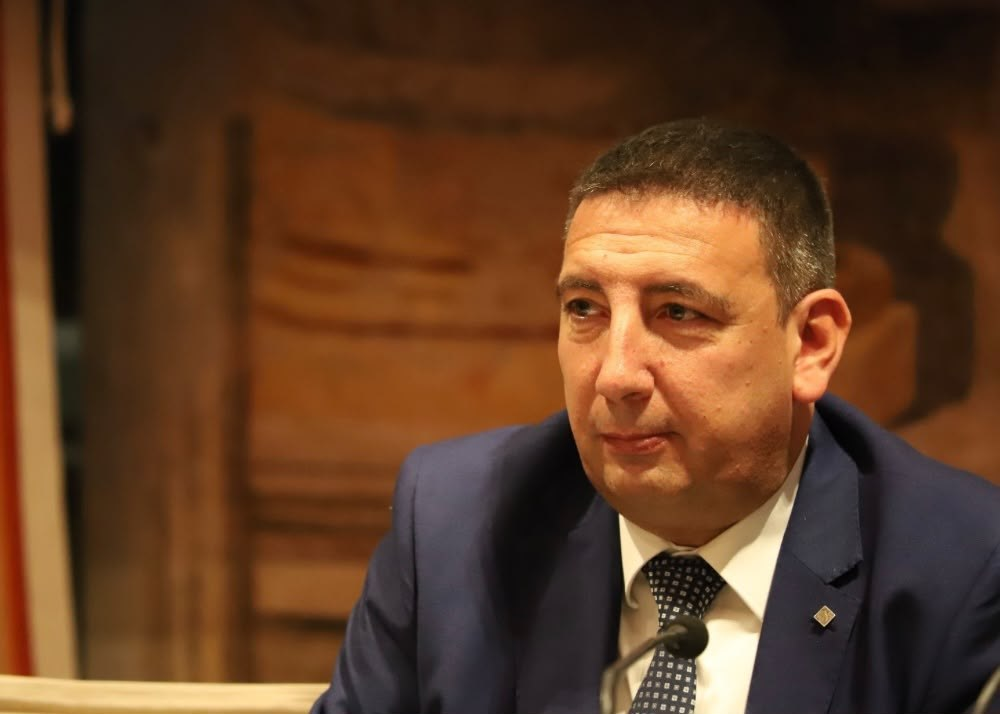

Quién soy
Quién soy
Arquitecto de formación, abrucés de Vasto, al servicio de las instituciones desde hace casi treinta años. Desde 2022, Senador de la República.

El mandato
Del territorio a Palazzo Madama
Nacido en Vasto el 29 de septiembre de 1974, licenciado en Arquitectura por la Universidad "G. D'Annunzio" de Chieti-Pescara. Su compromiso político comienza desde muy joven en el Fronte della Gioventù y continúa en Azione Giovani, la organización juvenil de Alleanza Nazionale, donde desempeña cargos provinciales, regionales y nacionales: en 2004 entra en el Ejecutivo Nacional presidido por Giorgia Meloni.
Se forja a lo largo de dieciocho años de administración local — concejal municipal en Vasto, consejero provincial en Chieti — hasta el cargo de secretario particular del Presidente de la Región de Abruzzo, Marco Marsilio. En 2012 figura entre los fundadores de Fratelli d'Italia en Abruzzo, del que es coordinador regional desde 2015. Desde el 13 de octubre de 2022 es Senador de la República por la circunscripción de Abruzzo.
- Vasto (CH), 1974Lugar y año de nacimiento
- ArquitectoUniversidad "G. D'Annunzio"
- Coordinador regional de FdIAbruzzo, desde 2015
- SenadorCircunscripción de Abruzzo, desde 2022
Trayectoria institucional
Desde 1994, una dirección
- Desde 1994
Activismo juvenil
Fronte della Gioventù, después Azione Giovani: cargos provinciales, regionales y nacionales, hasta el Ejecutivo Nacional presidido por Giorgia Meloni en 2004.
- 1998 – 2016
Concejal de Vasto
Elegido durante cuatro mandatos en su ciudad, en los que fue delegado de Políticas de Juventud, presidente de la Comisión de Asuntos Generales e Institucionales y portavoz del grupo municipal.
- 2009 – 2014
Diputado provincial de Chieti
Elegido en la circunscripción de Vasto 1 como el candidato más votado de la ciudad, ejerció de portavoz del grupo de Fratelli d'Italia.
- 2012
Fundador de Fratelli d'Italia en Abruzzo
Entre los fundadores del partido a nivel regional; desde 2015 es su coordinador regional.
- 2019 – 2022
Secretario particular del Presidente de la Región
Junto al Presidente Marco Marsilio al frente de la Región de Abruzzo.
- Desde 2022
Senador de la República
Elegido por la circunscripción de Abruzzo; desde el 9 de noviembre de 2022 es Portavoz de FdI en la VIII Comisión permanente. Desde 2023 es miembro de la Comisión de Cuestiones Regionales y de la Comisión Antimafia.
Cargos en la XIX Legislatura
- Gruppo Fratelli d'Italia (Senato)Miembro (fuente: Senato.it)18 de octubre de 2022 · Ficha en Senato.it (enlace externo, se abre en una nueva ventana)
- 8ª Commissione permanente (Ambiente, transizione ecologica, energia, lavori pubblici, comunicazioni, innovazione tecnologica)Portavoz del grupo Fratelli d'Italia (fuente: Openpolis · la ficha de Senato.it registra la pertenencia a la comisión; el papel de portavoz consta en Openpolis y en los comunicados del Senador)9 de noviembre de 2022 · Ficha en Senato.it (enlace externo, se abre en una nueva ventana)
- Commissione parlamentare di inchiesta sul fenomeno delle mafie e sulle altre associazioni criminali, anche straniereMiembro (fuente: Senato.it)17 de mayo de 2023 · Ficha en Senato.it (enlace externo, se abre en una nueva ventana)
- Commissione parlamentare per le questioni regionaliMiembro (fuente: Senato.it)7 de septiembre de 2023 · Ficha en Senato.it (enlace externo, se abre en una nueva ventana)
Fuentes: Senado de la República, Openpolis.